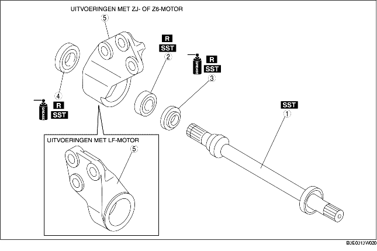

1. Verwijder de onderdelen in de aangegeven volgorde, zie de tabel.
2. Plaats de onderdelen in omgekeerde volgorde.

.
1. Verwijder de tussenas met een pers.
1. Verwijder het lager en de stofring (rechts/links) met SST.
2. Als het lager op de tussenas blijft zitten, plaats dan SST en de tussenas op een pers.
1. Breng vet aan op de lip van de nieuwe stofring.
2. Plaats de nieuwe stofring (rechts) met SST.
1. Plaats het nieuwe lager met SST.
1. Breng vet aan op de lip van de nieuwe stofring.
2. Plaats de nieuwe stofring (links) met een stalen plaat en SST.
1. Plaats de tussenas met SST en een pers.